# Import the libraries we need for this lab
import numpy as np
import matplotlib.pyplot as plt
from mpl_toolkits import mplot3dTraining Two Parameter Mini-Batch Gradient Decent
In this Lab, you will practice training a model by using Mini-Batch Gradient Descent.
Keywords
Training Two Parameter, Mini-Batch Gradient Decent, Training Two Parameter Mini-Batch Gradient Decent]

Linear Regression 1D: Training Two Parameter Mini-Batch Gradient Decent
Objective
- How to use Mini-Batch Gradient Descent to train model.
Table of Contents
In this Lab, you will practice training a model by using Mini-Batch Gradient Descent.
- Make Some Data
- Create the Model and Cost Function (Total Loss)
- Train the Model: Batch Gradient Descent
- Train the Model: Stochastic Gradient Descent with Dataset DataLoader
- Train the Model: Mini Batch Gradient Decent: Batch Size Equals 5
- Train the Model: Mini Batch Gradient Decent: Batch Size Equals 10
Estimated Time Needed: 30 min
Preparation
We’ll need the following libraries:
The class plot_error_surfaces is just to help you visualize the data space and the parameter space during training and has nothing to do with PyTorch.
# The class for plotting the diagrams
class plot_error_surfaces(object):
# Constructor
def __init__(self, w_range, b_range, X, Y, n_samples = 30, go = True):
W = np.linspace(-w_range, w_range, n_samples)
B = np.linspace(-b_range, b_range, n_samples)
w, b = np.meshgrid(W, B)
Z = np.zeros((30, 30))
count1 = 0
self.y = Y.numpy()
self.x = X.numpy()
for w1, b1 in zip(w, b):
count2 = 0
for w2, b2 in zip(w1, b1):
Z[count1, count2] = np.mean((self.y - w2 * self.x + b2) ** 2)
count2 += 1
count1 += 1
self.Z = Z
self.w = w
self.b = b
self.W = []
self.B = []
self.LOSS = []
self.n = 0
if go == True:
plt.figure()
plt.figure(figsize = (7.5, 5))
plt.axes(projection = '3d').plot_surface(self.w, self.b, self.Z, rstride = 1, cstride = 1, cmap = 'viridis', edgecolor = 'none')
plt.title('Loss Surface')
plt.xlabel('w')
plt.ylabel('b')
plt.show()
plt.figure()
plt.title('Loss Surface Contour')
plt.xlabel('w')
plt.ylabel('b')
plt.contour(self.w, self.b, self.Z)
plt.show()
# Setter
def set_para_loss(self, W, B, loss):
self.n = self.n + 1
self.W.append(W)
self.B.append(B)
self.LOSS.append(loss)
# Plot diagram
def final_plot(self):
ax = plt.axes(projection = '3d')
ax.plot_wireframe(self.w, self.b, self.Z)
ax.scatter(self.W, self.B, self.LOSS, c = 'r', marker = 'x', s = 200, alpha = 1)
plt.figure()
plt.contour(self.w, self.b, self.Z)
plt.scatter(self.W, self.B, c = 'r', marker = 'x')
plt.xlabel('w')
plt.ylabel('b')
plt.show()
# Plot diagram
def plot_ps(self):
plt.subplot(121)
plt.ylim()
plt.plot(self.x, self.y, 'ro', label = "training points")
plt.plot(self.x, self.W[-1] * self.x + self.B[-1], label = "estimated line")
plt.xlabel('x')
plt.ylabel('y')
plt.title('Data Space Iteration: '+ str(self.n))
plt.subplot(122)
plt.contour(self.w, self.b, self.Z)
plt.scatter(self.W, self.B, c = 'r', marker = 'x')
plt.title('Loss Surface Contour')
plt.xlabel('w')
plt.ylabel('b')
plt.show()Make Some Data
Import PyTorch and set random seed:
# Import PyTorch library
import torch
torch.manual_seed(1)<torch._C.Generator at 0x7dc5dfe66290>Generate values from -3 to 3 that create a line with a slope of 1 and a bias of -1. This is the line that you need to estimate. Add some noise to the data:
# Generate the data with noise and the line
X = torch.arange(-3, 3, 0.1).view(-1, 1)
f = 1 * X - 1
Y = f + 0.1 * torch.randn(X.size())Plot the results:
# Plot the line and the data
plt.plot(X.numpy(), Y.numpy(), 'o', label = 'y', c='g')
plt.plot(X.numpy(), f.numpy(), label = 'f', c='b')
plt.xlabel('x')
plt.ylabel('y')
plt.legend()
plt.show()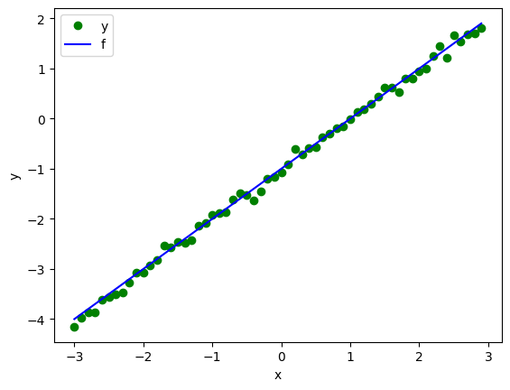
Create the Model and Cost Function (Total Loss)
Define the forward function:
# Define the prediction function
def forward(x):
return w * x + bDefine the cost or criterion function:
# Define the cost function
def criterion(yhat, y):
return torch.mean((yhat - y) ** 2)Create a plot_error_surfaces object to visualize the data space and the parameter space during training:
# Create a plot_error_surfaces object.
get_surface = plot_error_surfaces(15, 13, X, Y, 30)<Figure size 640x480 with 0 Axes>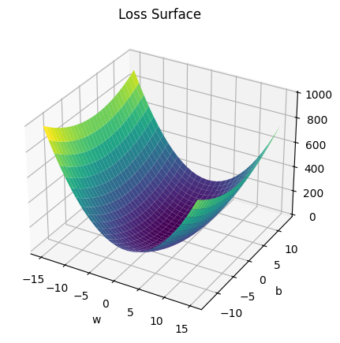
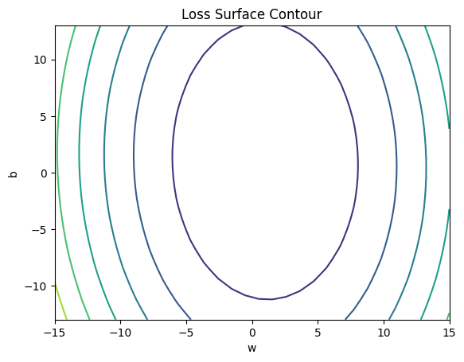
Train the Model: Batch Gradient Descent (BGD)
Define train_model_BGD function.
# Define the function for training model
w = torch.tensor(-15.0, requires_grad = True)
b = torch.tensor(-10.0, requires_grad = True)
lr = 0.1
LOSS_BGD = []
def train_model_BGD(epochs):
for epoch in range(epochs):
Yhat = forward(X)
loss = criterion(Yhat, Y)
LOSS_BGD.append(loss)
get_surface.set_para_loss(w.data.tolist(), b.data.tolist(), loss.tolist())
get_surface.plot_ps()
loss.backward()
w.data = w.data - lr * w.grad.data
b.data = b.data - lr * b.grad.data
w.grad.data.zero_()
b.grad.data.zero_()Run 10 epochs of batch gradient descent: bug data space is 1 iteration ahead of parameter space.
# Run train_model_BGD with 10 iterations
train_model_BGD(10)
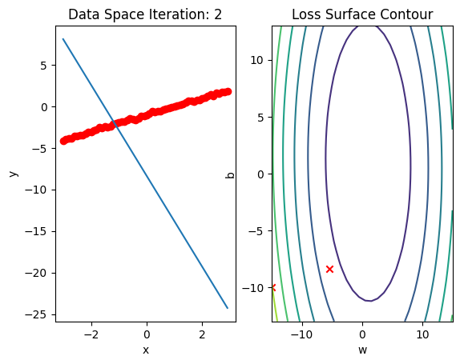
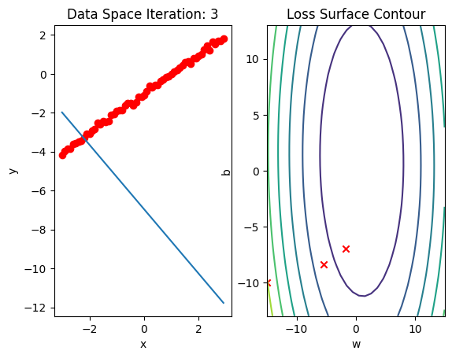
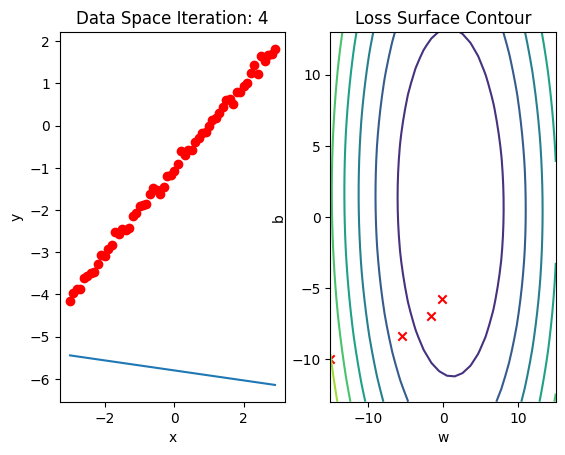
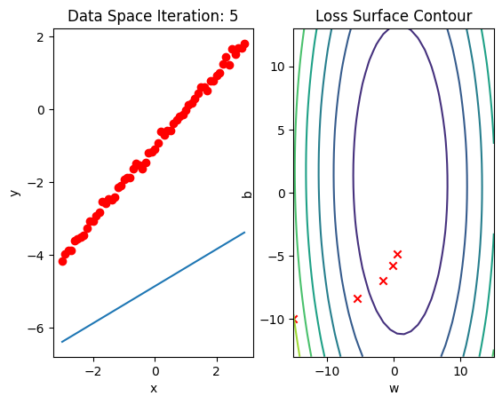
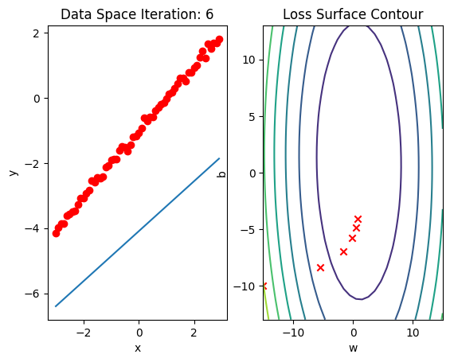
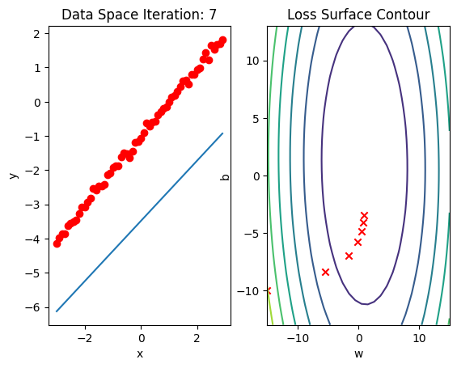
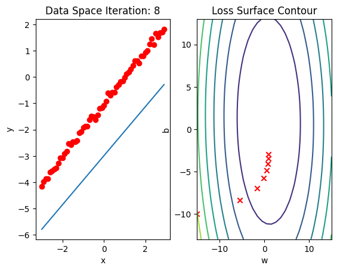
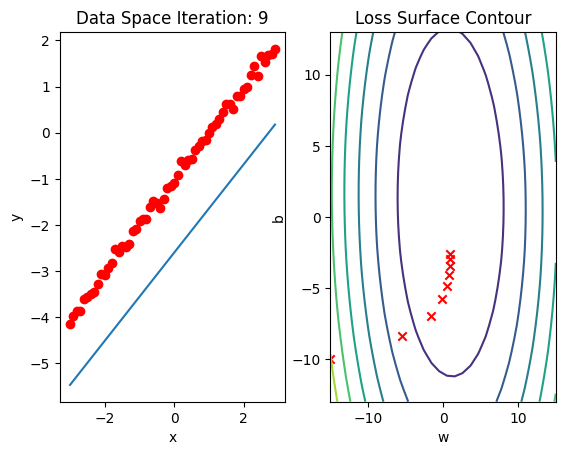
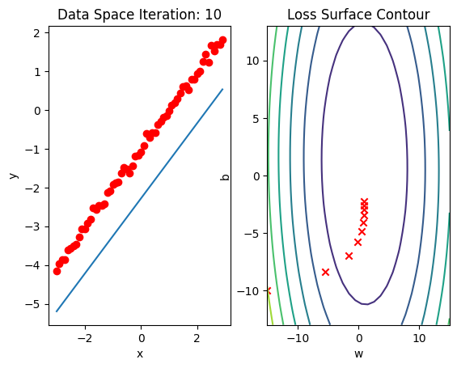
Stochastic Gradient Descent (SGD) with Dataset DataLoader
Create a plot_error_surfaces object to visualize the data space and the parameter space during training:
# Create a plot_error_surfaces object.
get_surface = plot_error_surfaces(15, 13, X, Y, 30, go = False)Import Dataset and DataLoader libraries
# Import libraries
from torch.utils.data import Dataset, DataLoaderCreate Data class
# Create class Data
class Data(Dataset):
# Constructor
def __init__(self):
self.x = torch.arange(-3, 3, 0.1).view(-1, 1)
self.y = 1 * X - 1
self.len = self.x.shape[0]
# Getter
def __getitem__(self, index):
return self.x[index], self.y[index]
# Get length
def __len__(self):
return self.lenCreate a dataset object and a dataloader object:
# Create Data object and DataLoader object
dataset = Data()
trainloader = DataLoader(dataset = dataset, batch_size = 1)Define train_model_SGD function for training the model.
# Define train_model_SGD function
w = torch.tensor(-15.0, requires_grad = True)
b = torch.tensor(-10.0, requires_grad = True)
LOSS_SGD = []
lr = 0.1
def train_model_SGD(epochs):
for epoch in range(epochs):
Yhat = forward(X)
get_surface.set_para_loss(w.data.tolist(), b.data.tolist(), criterion(Yhat, Y).tolist())
get_surface.plot_ps()
LOSS_SGD.append(criterion(forward(X), Y).tolist())
for x, y in trainloader:
yhat = forward(x)
loss = criterion(yhat, y)
get_surface.set_para_loss(w.data.tolist(), b.data.tolist(), loss.tolist())
loss.backward()
w.data = w.data - lr * w.grad.data
b.data = b.data - lr * b.grad.data
w.grad.data.zero_()
b.grad.data.zero_()
get_surface.plot_ps()Run 10 epochs of stochastic gradient descent: bug data space is 1 iteration ahead of parameter space.
# Run train_model_SGD(iter) with 10 iterations
train_model_SGD(10)
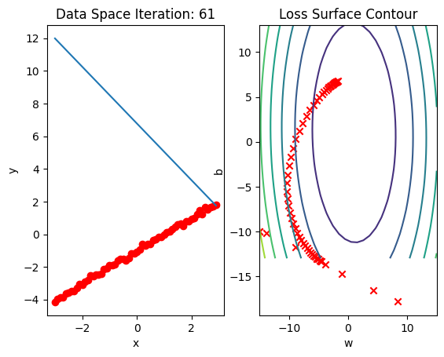
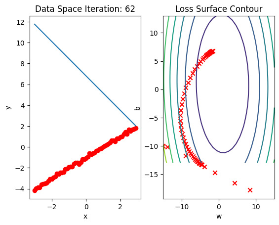
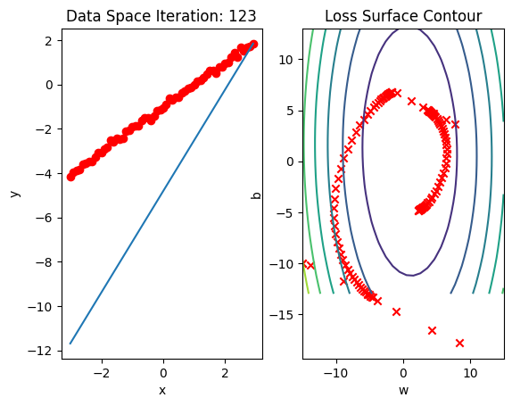
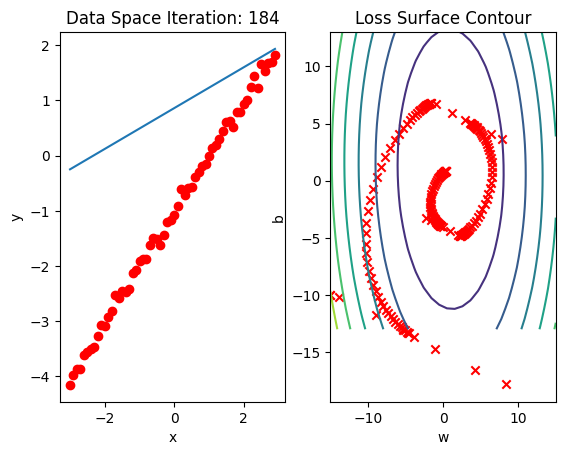
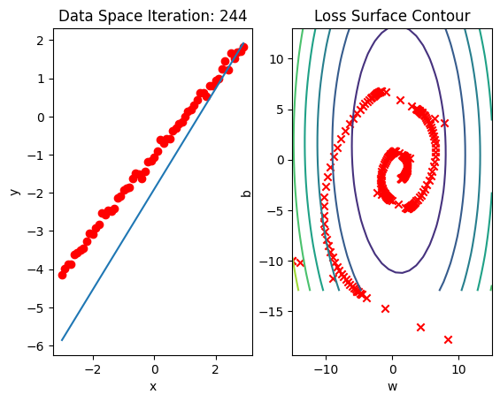
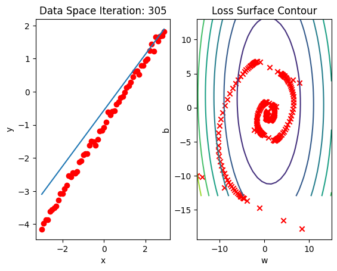
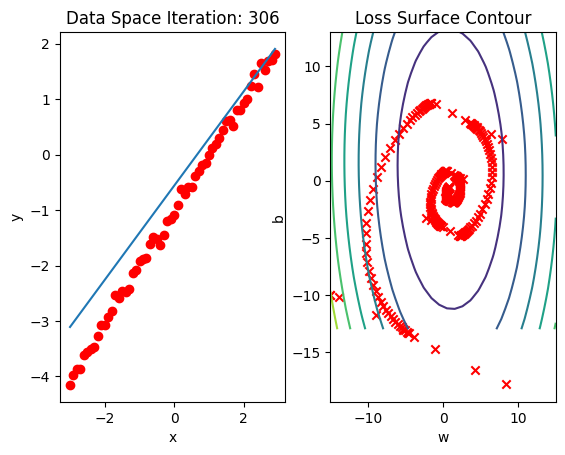
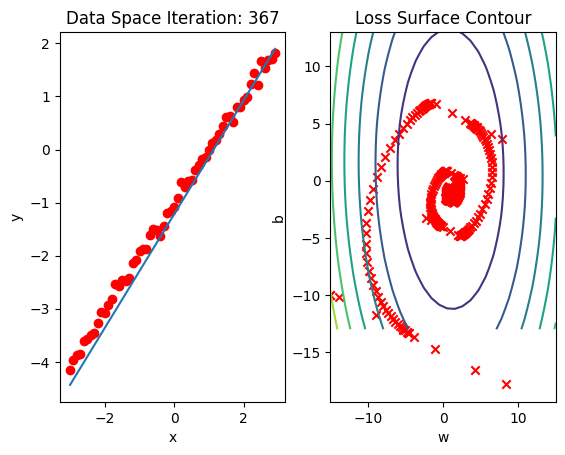
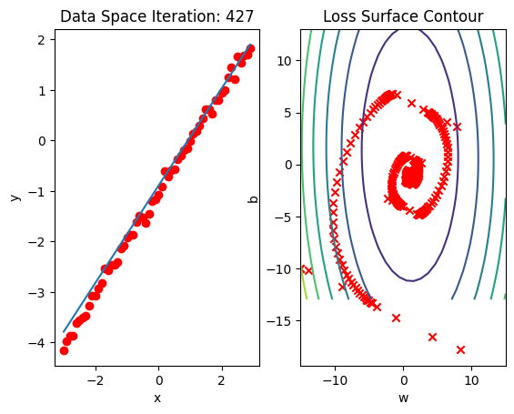
Mini Batch Gradient Descent: Batch Size Equals 5
Create a plot_error_surfaces object to visualize the data space and the parameter space during training:
# Create a plot_error_surfaces object.
get_surface = plot_error_surfaces(15, 13, X, Y, 30, go = False)
get_surface<__main__.plot_error_surfaces at 0x77fc19f16660>Create Data object and create a Dataloader object where the batch size equals 5:
# Create DataLoader object and Data object
dataset = Data()
trainloader = DataLoader(dataset = dataset, batch_size = 5)Define train_model_Mini5 function to train the model.
# Define train_model_Mini5 function
w = torch.tensor(-15.0, requires_grad = True)
b = torch.tensor(-10.0, requires_grad = True)
LOSS_MINI5 = []
lr = 0.1
def train_model_Mini5(epochs):
for epoch in range(epochs):
Yhat = forward(X)
get_surface.set_para_loss(w.data.tolist(), b.data.tolist(), criterion(Yhat, Y).tolist())
get_surface.plot_ps()
LOSS_MINI5.append(criterion(forward(X), Y).tolist())
for x, y in trainloader:
yhat = forward(x)
loss = criterion(yhat, y)
get_surface.set_para_loss(w.data.tolist(), b.data.tolist(), loss.tolist())
loss.backward()
w.data = w.data - lr * w.grad.data
b.data = b.data - lr * b.grad.data
w.grad.data.zero_()
b.grad.data.zero_()Run 10 epochs of mini-batch gradient descent: bug data space is 1 iteration ahead of parameter space.
# Run train_model_Mini5 with 10 iterations.
train_model_Mini5(10)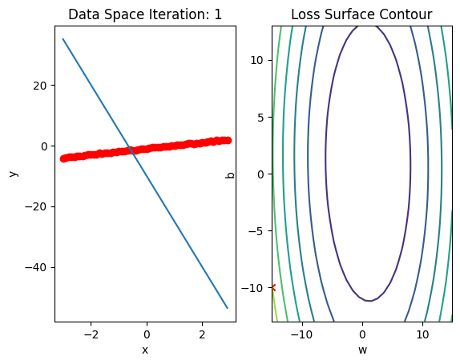
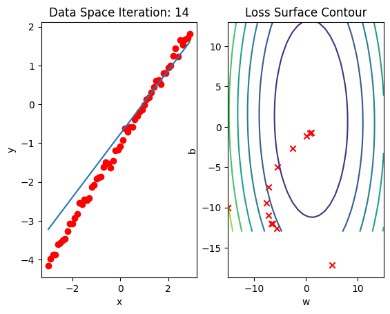
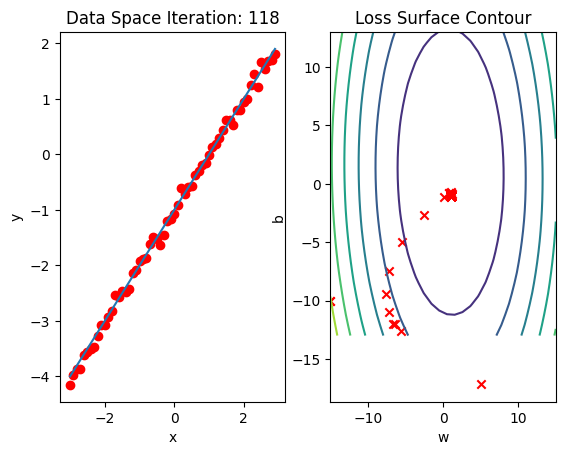
Mini Batch Gradient Descent: Batch Size Equals 10
Create a plot_error_surfaces object to visualize the data space and the parameter space during training:
# Create a plot_error_surfaces object.
get_surface = plot_error_surfaces(15, 13, X, Y, 30, go = False)Create Data object and create a Dataloader object batch size equals 10
# Create DataLoader object
dataset = Data()
trainloader = DataLoader(dataset = dataset, batch_size = 10)Define train_model_Mini10 function for training the model.
# Define train_model_Mini5 function
w = torch.tensor(-15.0, requires_grad = True)
b = torch.tensor(-10.0, requires_grad = True)
LOSS_MINI10 = []
lr = 0.1
def train_model_Mini10(epochs):
for epoch in range(epochs):
Yhat = forward(X)
get_surface.set_para_loss(w.data.tolist(), b.data.tolist(), criterion(Yhat, Y).tolist())
get_surface.plot_ps()
LOSS_MINI10.append(criterion(forward(X),Y).tolist())
for x, y in trainloader:
yhat = forward(x)
loss = criterion(yhat, y)
get_surface.set_para_loss(w.data.tolist(), b.data.tolist(), loss.tolist())
loss.backward()
w.data = w.data - lr * w.grad.data
b.data = b.data - lr * b.grad.data
w.grad.data.zero_()
b.grad.data.zero_()Run 10 epochs of mini-batch gradient descent: bug data space is 1 iteration ahead of parameter space.
# Run train_model_Mini5 with 10 iterations.
train_model_Mini10(10)
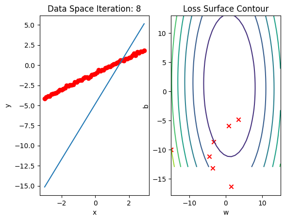
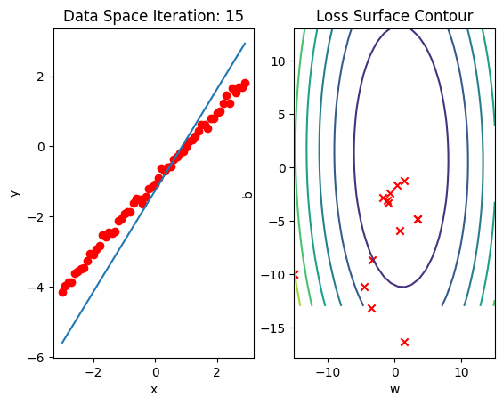
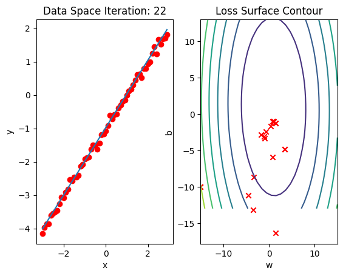
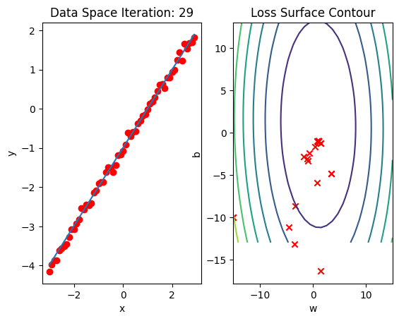
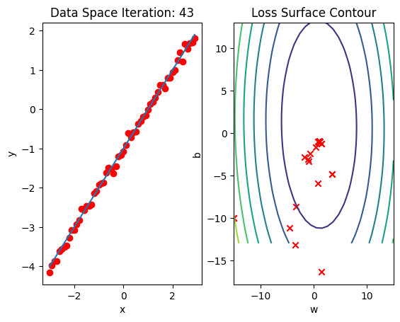
Plot the loss for each epoch:
LOSS_BGD_ = [loss.item() for loss in LOSS_BGD]# Plot out the LOSS for each method
plt.plot(LOSS_BGD_,label = "Batch Gradient Descent")
plt.plot(LOSS_SGD,label = "Stochastic Gradient Descent")
plt.plot(LOSS_MINI5,label = "Mini-Batch Gradient Descent, Batch size: 5")
plt.plot(LOSS_MINI10,label = "Mini-Batch Gradient Descent, Batch size: 10")
plt.legend()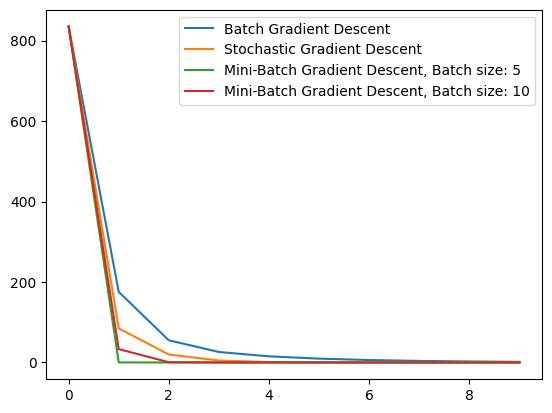
Practice
Perform mini batch gradient descent with a batch size of 20. Store the total loss for each epoch in the list LOSS20.
# Practice: Perform mini batch gradient descent with a batch size of 20.
dataset = Data()
trainloader = DataLoader(dataset = dataset, batch_size = 20)
w = torch.tensor(-15.0, requires_grad = True)
b = torch.tensor(-10.0, requires_grad = True)
LOSS_MINI20 = []
lr = 0.1
def my_train_model(epochs):
for epoc in range(epochs):
Yhat = forward(X)
get_surface.set_para_loss(w.data.tolist(), b.data.tolist(), criterion(Yhat, Y).tolist())
get_surface.plot_ps()
LOSS_MINI20.append(criterion(forward(X), Y).tolist())
for x, y in trainloader:
yhat = forward(x)
loss = criterion(yhat, y)
get_surface.set_para_loss(w.data.tolist(), b.data.tolist(), loss.tolist())
loss.backward()
w.data = w.data - lr * w.grad.data
b.data = b.data - lr * b.grad.data
w.grad.data.zero_()
b.grad.data.zero_()Double-click here for the solution.
Plot a graph that shows the LOSS results for all the methods.
# Practice: Plot a graph to show all the LOSS functions
# Type your code hereDouble-click here for the solution.